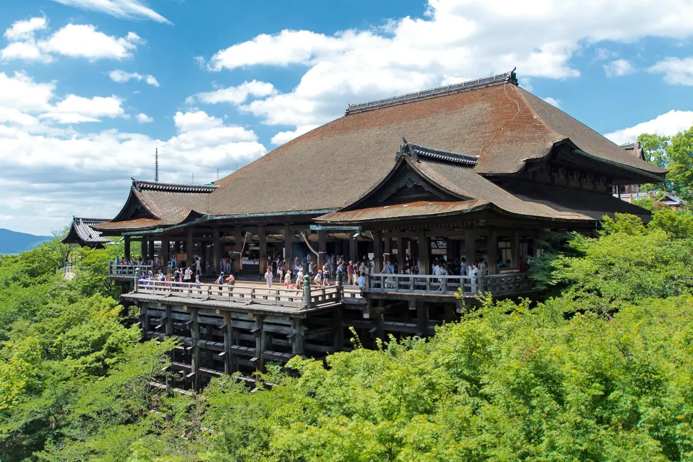

Stay curious
Look beyond the familiar. There is always another story, neighborhood or coastline to discover.
TravelBloom is a place for people who believe the best journeys begin with curiosity. We bring beach escapes, timeless temples and memorable cities together, so you can discover destinations that reflect what you love.

A destination is more than a pin on a map. It is a landscape, a story, and a different way of seeing the world. Our goal is to give every place a little context and every traveler a useful starting point.
Search by the places and experiences that interest you, explore the details, and save the destinations you want to come back to. The final itinerary is yours to imagine.
Look beyond the familiar. There is always another story, neighborhood or coastline to discover.
Learn about the places you visit. Respect local customs, communities and natural spaces.
Start with what moves you. A quiet beach and a busy city can be equally unforgettable.
Illustrative team profiles
for this student project.
Travel Curator
Brings destinations together around the experiences that make a journey memorable.
Destination Researcher
Finds the cultural stories and local details that help travelers understand a place.
Experience Designer
Makes exploring, searching and saving destinations feel simple and intuitive.